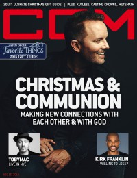

Andrew Greer
|  |
| 15 December 2015 CCM Digital |
 |
| 1 December 2017 CCM Digital |
Media coverage:
- Jan 2012 in CCM Digital "Heavenly Host", by Caroline Lusk
- Dec 2012 in CCM Digital "Your World: Hymns for Hunger: When Faith and Need Collide", by Matt Conner
- 1 May 2014 in CCM Digital "One Last Look: Via Dolorosa"
- 1 Dec 2017 in CCM Digital "The Art Of Conversation", by Kevin Sparkman
Albums & reviews:
2009: Open Book
2012: Angel Band: The Hymn Sessions
2013: Angel Band: The Christmas Sessions
2012: Angel Band: The Hymn Sessions
- Feb 2012 in CCM Digital, by Matt Conner
- Mar 2012 in Christianity Today, by Joseph Oliphint
- Mar 2012 in Worship Leader, by Jay Akins
2013: Angel Band: The Christmas Sessions
- Nov 2013 in Worship Leader, by Andrea Hunter
- Dec 2013 in CCM Digital, by Caroline Lusk
- Dec 2013 in CCM Digital, by Andy Argyrakis
- 1 Dec 2015 in CCM Digital, by Kevin Sparkman
Award Summary (Nominations / Wins)
Dove Awards- 2013 Dove Awards
- Instrumental Album: All Things Bright And Beautiful: Hymns For The Seasons
Published articles:
© 2011 CMnexus. Last updated September 2019. Contact: editor -AT- cmnexus -DØT- org About